Seeing Global
1.
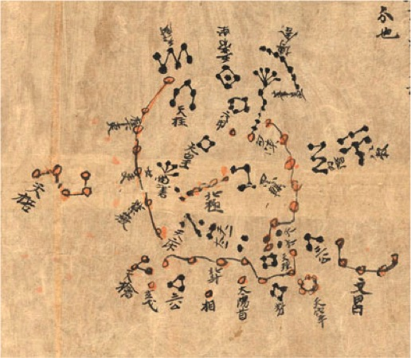
Section of the Dunhuang Start Chart, ca. 705-710. (T’ang period) or possibly ca. 940. Discovered in Dunhuang, an oasis town where two branches of silk road merge on final route to the capital. It was found in a buddhist holy site (cave) cut into the rock of a cliff.
You are looking at a panel of a Chinese scroll containing the oldest complete atlas of the heavens that has been preserved from any civilization.1 It is a seventh-century (Tang dynasty) star chart, discovered near Dunhuang, an oasis town on the Silk Road where two main branches of the western network of trade routes converge and continue eastward to China’s capital city of Xi’an.2 While the purpose of the Dunhuang atlas was astrological divination (celestial events were believed to mirror those on Earth), it was based on accurate scientific observation.3 Over two meters long, its multiple panels are a graphic depiction of the entire sky. Beautiful to look at, it is a remarkably precise astronomical document. The scroll displays unambiguously the position of 1,500 stars within the traditional Chinese constellations. The panels are a sequence of circumpolar regions in azimuthal projection, a measurement method still in use today.4
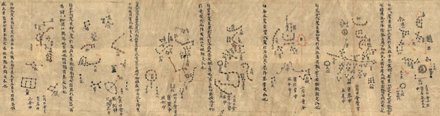
Dunhuang Start Chart, ca. 705-710. (T’ang period) or possibly ca. 940. Discovered in Dunhuang, an oasis town where two branches of silk road merge on final route to the capital. It was found in a buddhist holy site (cave) cut into the rock of a cliff.
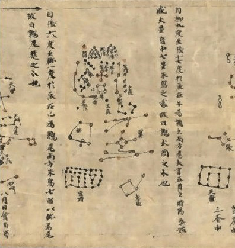
One of the sections of the Dunhuang star map, the oldest star chart from any civilization and the first pictorial representation of the classical Chinese constellations. The star constellation in the middle resembles diagram number 5 of the I-Ching. It has nearly the same shape. It lies before the chinese star constellation Yi, a wing to fly on the wind. The wings of the Red Bird zhu que.
Due to the inferior quality of its calligraphy, the Dunhuang atlas is believed to be one of multiple copies of an imperial original. Scrolls were portable, hence useful for caravan navigation.5 Although visibility changed with the seasons, and positionality changed with location: “Silk Road travelers and residents saw the same stars whether they were on the shores of the Mediterranean or the borders of China, and knowledge of the stars was disseminated along its length.”6 Star charts measured distance in time, the movement of the heavens, in order to traverse space. With an eye on the stars, one did business on earth.
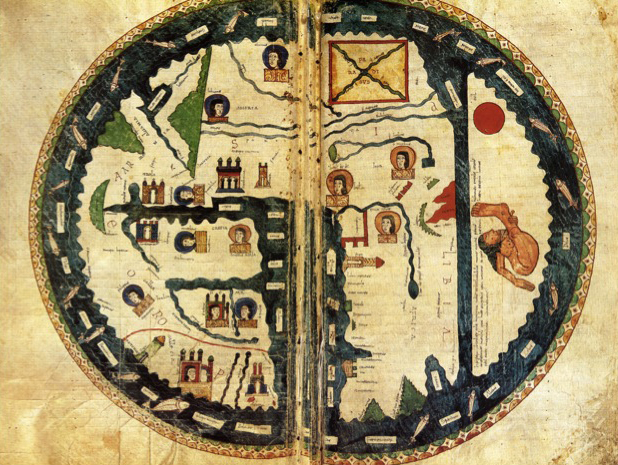
T-O Mappa Mundi (Map of the World), Osma, Beatus, Northern Spain (Andalus) 1086; China is paradise.
Above is a European Map of the World (Mappa Mundi) that was produced by Christian monks in an Iberian monastery three centuries later, at a time when most of the peninsula was under Muslim (Umayyad) rule. The type is known as a T-O Map, because of its shape – a circular (“O”) depiction of the inhabited world surrounded by ocean. Jerusalem, the navel (umbilicus) of the earth, is pictured at the center above a “T” formed by the Mediterranean Sea, the Nile River to the south and Don (Greek: Tanaïs) River to the north. The three major waterways forming the T separate the world into the known continents. Asia is above, Europe on the left, Africa on the right, and a fourth continent below Africa “not known to us because of the heat of the sun.”7 This T-O map appears in one of a series of illustrated commentaries on the book of Revelation, the last book of the Bible, that describes in calamitous detail the apocalyptic end of a fully Christianised world. The copiously illustrated manuscript series (of which there are 26 extant copies) is known as the Liébana Beatus, after the monk who produced the (lost) original prototype in 785 AD. It is a Christian perception of the whole of Earth’s space imagined in terms of time, from Adam and Eve to the End of Days that would come after the world was fully exposed to Christianity through the apostolic missions. China, the Orient, is the Garden of Eden and beginning of the world, as you can see clearly in the Silos Beatus variant of the Liébana Beautus series.
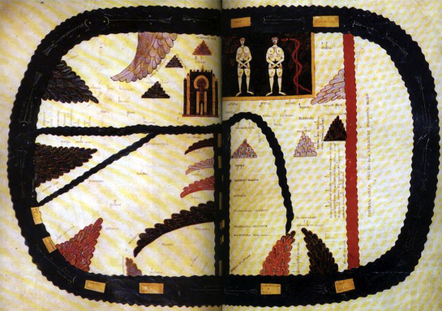
T-O Mappa Mundi, Saint-Seer Beatus, Northern Spain, 1106 CE.
The Christian, symbolic meaning of space as time, the eschatological depiction of the history of the world, placed little value on scientific accuracy. Indeed, “Christianity began with the announcement that time and history were about to end.”8 Within these temporal limits, geographical measurement of space was not a theological concern.9 Compare the T-O map with the Mappa Mundi in the Tabula Rogeriana by the Muslim geographer Muhammad al-Idrisi (below), created only half a century later in 1154.
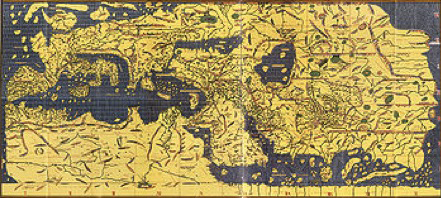
World Map in the Tabula Rogeriana, created by Muhammad al-Idrisi in 1154 CE.
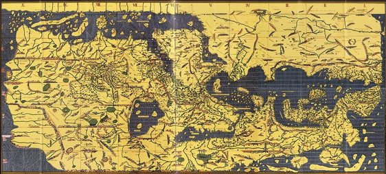
World Map in the Tabula Rogeriana, created by Muhammad al-Idrisi in 1154 CE, with original orientation (south on top).
Al-Idrisi, from a Moroccan family of Princes and Sufi leaders, had studied at Cordoba in Muslim Spain at the same time that Christian monks to the north were diligently copying the prototypes of the Liébana Beatus. He had access to the extensive work of Arabic geographers, having traveled widely in Africa, Anatolia, and parts of Europe, before settling in Sicily at the court of the Norman King Roger II, who commissioned him to create the map. The king’s Christian father, Roger I, had overthrown the previous Arab rulers of Sicily, but welcomed certain Muslim families for the scientific knowledge they could bring, maintaining Sicily’s multi-confessional culture. Roger II commissioned Al-Idrisi to create this map and others as part of an encyclopaedic text incorporating knowledge of Africa, the Indian Ocean and the Far East, gathered by merchants, explorers and cartographers from various civilisations. It is considered “one of the most exhaustive medieval works in the field of physical, descriptive, cultural, and political geography.”10 Al-Idrisi’s map remained the European standard for accuracy for the next three centuries. Accuracy, however, while necessary for trade or plans of conquest, did not displace maps with more lofty theological values.
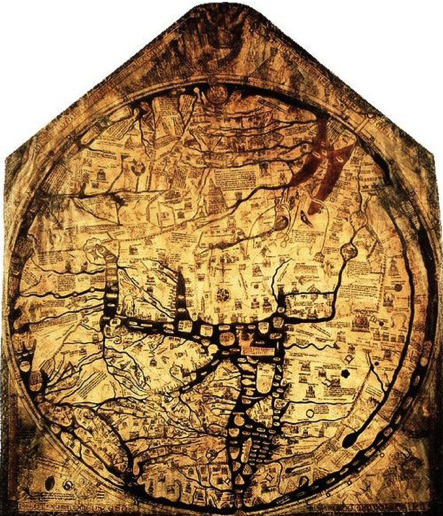
Hereford Mappa Mundi ca. 1300 CE.
The Hereford Mappa Mundi (above) is a Euro-Christian version produced more than a century later (ca. 1300). While the geographical detail makes this map more topologically convincing, it is still a classic T-O map with Jerusalem at centre, the Orient on top, Europe at bottom left, and Africa, bottom right, and spatial significance marked according to theological understanding. In other words, even when geographic space was known scientifically, Christians persisted in depicting the world in the eschatological terms of space as time.
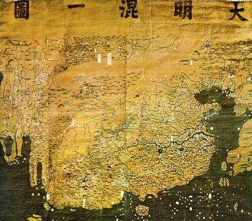
The Da Ming Hun Yi Tu (Great Ming Dynasty Amalagamated Map), painted on silk in AD 1389 (but with Manchu language captions superimposed on the Chinese, on paper slips several centuries later), is the oldest surviving Chinese world map.
Above is a section from the Da Ming Hun Yi Tu (Great Ming Dynasty Amalgamated Map). This is the oldest surviving, Chinese world map.11 Benefiting from Islamic science and geographic knowledge, it is a detailed and sophisticated rendering, painted on silk in 1389 AD but with Manchu language captions on paper slips superimposed on the Chinese several centuries later.
How backward Western Europe seems! But it would be wrong to limit our own historical understanding of the history of cartography in terms of a telos of scientific progress. The experts warn against the distortions caused by “scientific chauvinism” that judges past maps anachronistically according to the modern value of accuracy of measurements, erasing art and replacing it with the secular goals of science, whereby the history of cartography charts the rate of progress among competing civilizations written as “the saga of how the unmappable was finally mapped.”12 If we consider later copies of the Mappa Rogeriana, the distortions of scientific chauvinism become evident.
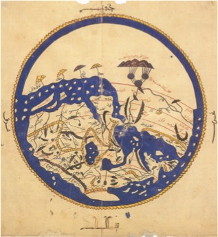
Variant of the map from The Book of Roger, (Wikicommons); Al-Idrisi map of 1154. Please note that on early Arabic maps of this type, South was placed at the top of the map. This is actually from a Cairo manuscript dated 1348: one of the only known versions without climate boundaries. Six of original not known. [By permission of the Dar al-Kutub, Cairo (Jugrafiya 150), photograph courtesy of Instituto Universitario Orientale, Naples.]
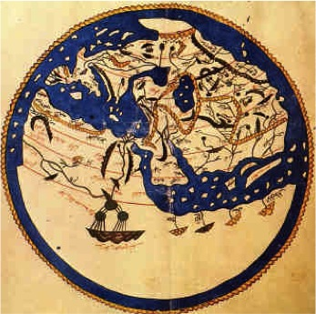
Variant of the map from The Book of Roger, (Wikicommons); Al-Idrisi map of 1154. From a Cairo manuscript dated 1348. This map image has been turned upside down to aid the viewer. The Mountains of the Moon are in the 7 or 8 o’clock position and appear upside down.
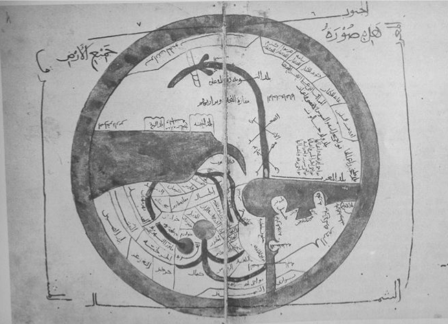
From “The Face of the Earth” [977] Ibn al Hawqal, Balkhi school, 10th CE [copy, 1445]; Topkapi Museum. Oriented with south at the top. Size of original not known. By permission of the Topkapi Sarayi Müzesi, Kürüphanesi, Istanbul (A. 3346). Hawqal, born in Nisibis [Syria] produced Surat al-’Ard “The Face of the Earth” 977, which was a revision and extension of the Masalik ul-Mamalik of Istakhri (951) which was a revised ed. of Suwar al-aqalim of Ahmed ibn Sahl al-Balkhi, who wrote about 921. al Hawqal travelled widely, including 20 degrees south of equator along east African coast; he corrected the Greeks, knew that this land was not uninhabitable.
Here we see a variant that was produced two centuries later by a different tradition of Muslim map-makers, the Balkhi school, named after the tenth-century geographer Ahmed ibn Sahll al-Balkhi. The map’s decorative aspects appear to overpower scientific description. Indeed, Islamic world maps with stylised spatial features similar to the T-O maps were produced by the Balkhi school. But even more to the point: what we call scientifically “advanced” in Al-Idrisi’s Mappa Rogeriana was actually tied to the past: the 1,000 year old tradition founded by the second-century Greek geographer, Ptolemy, that had been lost in Europe but remained alive and was made more accurate by Muslim cartographers as early as the ninth century under the patronage of Al-Ma’mun, the great Abbasid patron of philosophy and science, and would continue unabated within the Muslim world, despite multiple changes in that world’s theological and political orientation.13
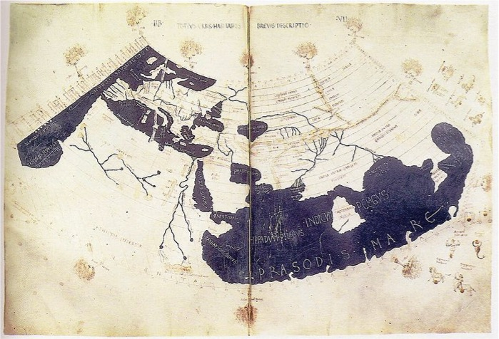
Ptolemy’s world map, reconstituted from Ptolemy’s Geographia (circa 150) in the 15th century, indicating “Sinae” (China) at the extreme right, beyond the island of “Taprobane” (Sri Lanka, oversized) and the “Aurea Chersonesus” (Southeast Asian peninsula). (Wikicommons)
In short, the history of map-making does not fit the narrow conception of history as progress. In fact, none of the ordering binaries of modernity (science v. art,14 religious v. secular,15 Occident v. Orient16) enable us to grasp the empirical history of maps that had multiple traditions, and that were used simultaneously by theologians, court astrologists, imperial conquerors, traveling scholars, religious pilgrims and merchants of trade. The contrast being made here is a limited point of comparison. Star maps and land maps charted space in a way that allowed one to traverse space in time, as opposed to the theological approach whereby divine history—time—was mapped as the space of the world. In terms of the philosophy of history, the Christian depiction of space as time can be seen as proto-Hegelian: the beginning of time is in the East, the “Orient,” and the end, the highest stage, is in the West.
Now to make this small point, why have I submitted you to all this cartographical data? It is to show you that the deeper one delves into empirical history (and this is generally true of historical research), the more the material evidence overthrows unilinear narratives of cultural developments belonging to particular civilisations. When empirical facts are not presumed from the start to belong to the histories of different political territories or religious spaces, the findings go against the conventions of history as a discipline. What I would like to propose is a different construction of history altogether—to cite the past, as one might sight the stars, bringing elements of it together within constellations of meaning that relate to our own time as the vanishing point.
2. Moon Constellation
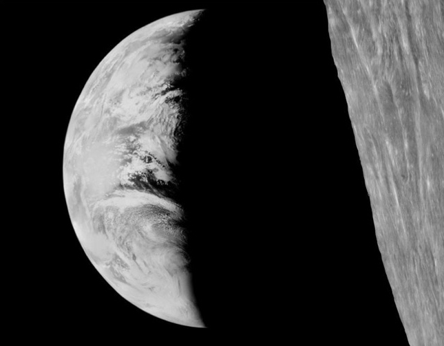
First photographed “Earthrise,” from the lunar Satellite I. August 1966.
In August 1966, the U.S. moon satellite, Lunar Orbiter II, transmitted the first picture of Earth shining over a lunar landscape.
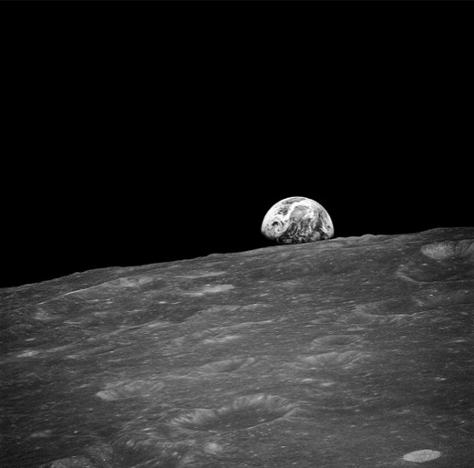
Two years later, the first manned spacecraft, Apollo 8, orbited the moon, and took this picture:
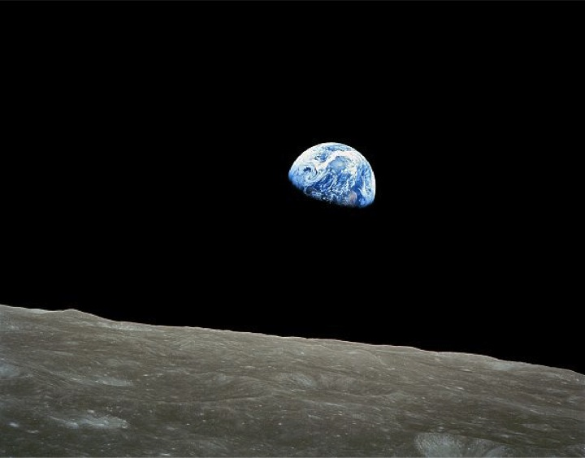
First image of the whole earth taken by humans (Bill Anders on Apollo 8). December 24, 1968.
Of course, the timing, Christmas Eve, was not accidental. US President John Kennedy pressured the scientists to meet that deadline so that the crew of Apollo 8, orbiting the moon ten times, could make a Christmas Eve television broadcast in which they read the first ten verses from the book of Genesis from the King James version of the Biblical text. So much for the so-called secular West!17
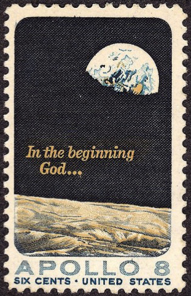
US postage stamp: 1969 issue.
Landing on the moon happened one year later.
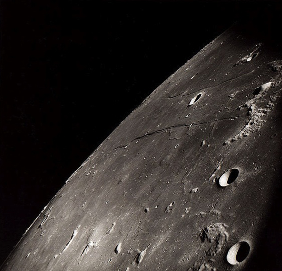
Rupes Cauchy in eastern Mare Tranquilitatis.
This was a triumph of modernity as the technological dream of human progress.18 It was the apogee of American power. But in a real sense, this culmination was also an ending.
The German historical philosopher Hans Blumenberg writes that the American moon landing initiated a transformation in human consciousness that “took place rapidly and almost silently.”19 It was the stream of transmitted pictures of the Earth that marked the world significance of this event—not the political staging, not the words, “That’s one small step for man, one giant leap for mankind,” and not even the images of the first moonwalk (a visually pitiful, even dubious event), but rather the images sent back to us of Earth.
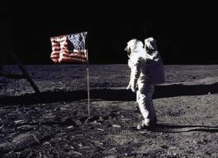
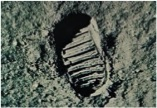
n/a
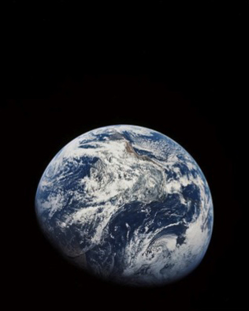
December 25, 1968.
Blumenberg writes: “Perhaps it would not have been necessary to send people to the Moon at all if what was to be brought back was, above all pictures.”20 He called this event the end of the Copernican Age. Rather than looking out into space, human beings look back from it, and see themselves. Images of the Earth are returned to us in the cosmic mirror and, for the first time, humanity sees whole self reflected. In contrast to the uniform appearance of earth from space, humanity is a body in pieces.
If, in Blumenberg’s sense, the event of seeing the planet Earth, a “cosmic exception,”21 marks an end to Copernican modernity, let us claim the right to authorize this lunar vision of Earth as the origin of a new era, one entered into in common by Earth-dwellers, and name it the Era of Globalization.22
3. Lunar Origins of Globalization
Others were paying attention to this event of the birth of Globalization. One was the Taiwanese artist Liu Kuo-Song.
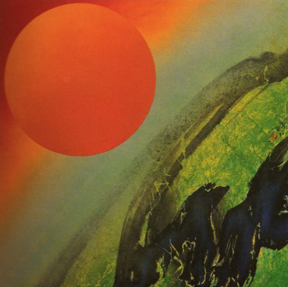
Liu Kuo-song, co-founder of Taiwan’s 五月畫會 (Fifth Moon Group), The Sun is Coming, 1991, from space series, begun in late 1960s.
Liu was inspired by the Apollo 8 space mission to paint a series of images depicting the newly visible realities by fusing the techniques of Chinese landscape painting with those of contemporary hard-edged abstraction. He was one of the co-founders of the Wuyue Huahui (Fifth Moon Group) a painting society of Taiwanese artists mainly active in the 1960s. Liu taught in Hong Kong in the 1970s and 80s, and was a visiting artist and professor in the United States on several occasions. Invited to Beijing in the 1980s, he has since become well known on the mainland. A major retrospective exhibition of his work was held at Beijing’s National Palace Museum in 2007.
A second artist, the filmmaker Kidlat Tahimik, was a child at the time of the moon landing, living in a small village in the Philippines. As a young man, he produced a film about that experience, which he describes as “awakening from the cocoon of American Dreams.”23 Entitled Perfumed Nightmare (1978), the film received numerous international awards.
Poster for Kidlat Tahimik’s Perfumed Nightmare (1978).
In the film, Kidlat tells of his childhood enthusiasm when hearing reports from the Voice of America of Apollo 8 on his portable radio. It was the time of the US military occupation (and the dictatorship of Fernando Marcos), and the young Kidlat became founder and head of the village fan club for Werner von Braun, the rocket scientist whose brilliance made the space voyages possible.
But that is not the whole story of von Braun. Before being recruited to the American space effort as director, he worked as a scientist in his native Germany. He joined the Nazi party in 1937 and served as a Germans SS officer during the war.
If we bring these three human beings into the same constellation under the sign of the 1969 moon landing, we get an idea of just how fragmented the now globally visible humanity was (and, of course, still is).
First photographed “Earthrise,” from the lunar Satellite I. August 1966.
Liu Kuo-song, co-founder of Taiwan’s 五月畫會 (Fifth Moon Group), The Sun is Coming, 1991, from space series, begun in late 1960s.
Poster for Kidlat Tahimik’s Perfumed Nightmare (1978).
Hans Blumenberg, whose description of the moon landing is the climax of his lengthy philosophical history, The Genesis of the Copernican World, was a student in Germany during the Hitler years. A Catholic, he was labeled a half-Jew by the Nazis, spent some time in concentration camps, and was hidden by his future wife’s family toward the end of the war. He neither credits, nor even mentions Werner von Braun in his book.
Blumenberg was born in 1920, Liu in 1932, Tahimik in 1942. If we were categorizing them according to nationality, or generation, or the genre of their work, they would never come into contact with each other. Blumenberg was a Western modernist, Liu merged modernism with Chinese tradition, and Tahimik’s Perfumed Nightmare was singled out by Fred Jameson as a Third-World example of post-modern cinema, coming out of a neo-colonized formation.24 But rather than keeping them in place within existing mappings of the intellectual landscape, within a global constellation, these three figures are allowed to converge.
4. Global Affinities
I will take you to another location.25 The place is the Middle East. The time is 1964.
Malcom X, 1925-1965: “You’re not supposed to be so blind with patriotism that you can’t face reality. Wrong is wrong no matter who does it or who says it.”
Malcolm X.
In April of that year Malcolm X made the Hajj to Mecca, an event that signaled his transformed understanding of politics, no longer a strategy of Black Nationalism and separatism, but one of transcending race through the universality of Islam.
Sayyid Outb, 1906-1966: “The way is not to free the earth from Roman and Persian tyranny in order to replace it with Arab tyranny….”
Sayyid Outb.
That same year Sayyid Qutb’s small book Milestones (Ma’alim fi al-Tariq) appeared, a call to action by a lay writer, in opposition to both the religious and the government establishment in Egypt, to recreate the Muslim world on strictly Qur’anic grounds. The book rescued for Islam the substance of Marx’s critique of socio-economic injustice, and argued, in terms that echoed the contemporaneous politics of liberation theology among Catholics, that obedience to God superceded the sovereign claim of any earthly power. (The book ultimately caused Qutb to be re-arrested by Nassar’s government and sent back to prison, accused of plotting to overthrow the state.)
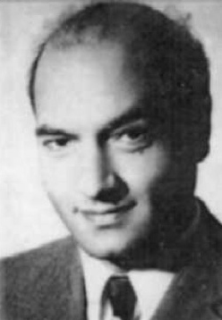
Ali Shariati, 1933-1977. On Western role models of liberated women available in Iran in 1970: “We have no right to know Angela [Davis], the American girl in prison…the hope of …all the free people of the world, of all the wounded, of all those condemned through racial discrimination – in other words, all the oppressed.”
Ali Shariati.
It was the year, too, that the Leftist intellectual Ali Shariati returned to Iran after exile in France, where he had corresponded with, and published in Iranian translation works by the Martinique-born Marxist psychoanalyst, Frantz Fanon, whose philosophy of liberation was foundational for post-colonial theory.26
Frantz Fanon, 1925-1961: “What matters today, the issue which blocks the horizon, is the need for a redistribution of wealth. Humanity will have to address this question, no matter how devastating the consequences may be.”
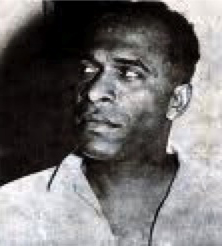
Frantz Fanon.
After his brief arrest by Shah Mohammad Reza Pahlavi, Shariati began his famous university lectures in Iran (including “Fatima is Fatima”) articulating a truly leftist Islamic political position, drawing eclectically, syncretically (as opposed to Hegelian synthetics) on Marxist, Islamist, feminist, anti-imperialist, and existentialist theoretical insights.27
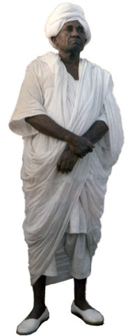
Mahmoud Mohammed Taha, 1909-1985: “Islam’s original precept is complete equality…a lack of social classes and discrimination based on color, faith, race, or sex.”
Mahmoud Mohammed Taha.
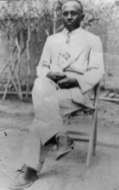
Mahmoud Mohammed Taha.
Two years later, the Sudanese Muslim, Mahmoud Taha, published The Second Message of Islam, a reading of the Qur’an that interpreted the Meccan revelations to the Prophet as universal in their truth, in contrast to the socio-historical specificity of the Medina revelations that, he argued, reflected the particular needs of practical governance, given the customs and consciousness of the times: the Meccan revelations express radical racial and sexual equality.
Malcolm X was assassinated in the United States in 1965. The plot involved the Nation of Islam or the FBI, or both. In 1966 Sayyid Qutb, former functionary in the Egyptian ministry of education, who became the intellectual inspiration for the Muslim Brotherhood (founded by Hassan al-Banna in 1928) and spent years in Nassar’s prisons, was executed for alleged conspiracy against the government. Ali Shari’ati died suddenly in Southhampton, England, in 1978, just months before the outbreak of the Iranian Revolution (SAVAK, the Shah’s secret police, remains suspect); in 1983 Mahmoud Taha was executed for his views by the Sudanese Islamist dictator Numeri, who was backed at the time by the local chapter of the Muslim Brotherhood.
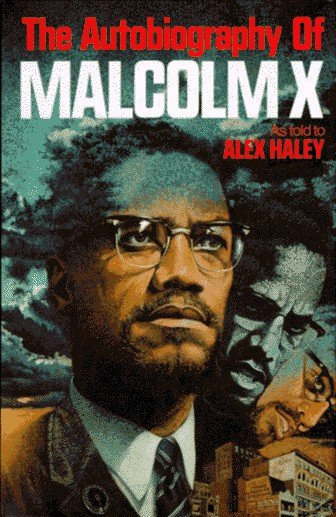
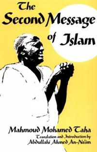
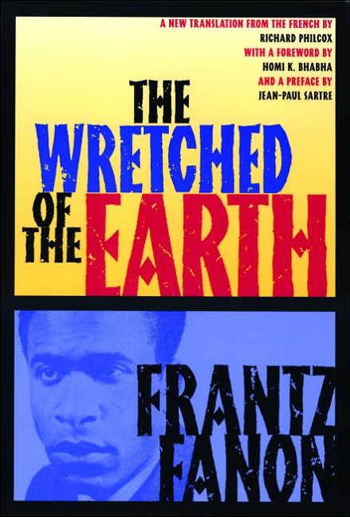
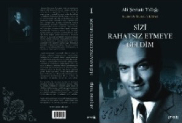
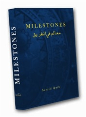
All of these historical actors were part of the 1960s generation – a global generation, and this is the point. Seen from a global perspective, they can be brought together in the same constellation despite their differences. Rather than inserting each of them individually into a separate national story or religious tradition, history is imagined in terms of simultaneities in space, instead of sequential developments in time. Such constellations mark the uncharted sky of universal humanity as a body in pieces. What might the implications be for a global history of art?
5. Conceptualizing the Global
“Art teaches us to see things. It is training in observation.” - Walter Benjamin
The 2006 book, Is Art History Global? considered this question in terms of the history of art as an academic discipline. It debated whether the study and teaching of art could, or should be global in terms of its methods? Its contents? Its canon? The most extreme poles presented there were between two positions: James Elkins, the book’s editor, questioned the extreme position of Mieke Bal, a founding figure in the new field of visual studies, who was seemingly content to dissolve the disciplinary boundaries of art history completely. Elkins proposed using (Western) theory as the foundation of a global discipline of art as traditionally understood. He found exemplary the work of specific (Western) art historians: T.J. Clark, who grapples with Hegel, Michael Fried, who does the same with Kierkegaard and Wittgenstein, Michael Camille with Derrida, and Didi-Huberman with Lacan. We might add the omnipresent Foucault, the man for all seasons, whose “governmentality” provides a critical concept for all disciplines in the humanities.
Elkins concluded: “I think it can be argued that there is no non-Western tradition of art history, if by that is meant a tradition with its own interpretive strategies and forms of argument.”28 His evidence: Chinese specialists are not hired to teach in Western universities on the basis of their ability to deploy indigenous historiographic methods. The Bal-Elkins debate will not concern us here.29 We take a detour around art history as a discipline with its established, undeniably Western-centric traditions, and, side-stepping the interdisciplinary/non-disciplinary concerns and internecine struggles of the academy, push ahead by changing the question.
Rather than considering the relevance of theory for art historians, we will look at how looking at art, studying art, making visual connections and cross-references among artworks and artists, can help us in conceptualizing the global in a different way. Cultural production conceived as “global,” is not world culture, wherein universality is understood as inclusion, expanding the existing art canons around abstract terms that imply universality, or giving equal time to civilizational or cultural differences, or arranging the art of civilizations in a chronology that culminates in a universalized, globalized modernity. Rather global aesthetic imagination, the capacity to apprehend artistic production in a new way, emerges at a particular time, marked by certain common historical experiences.
These experiences have their origins, not in the West, but in the post-colonial world, necessitating a conceptual break between the modern and the global. “The modern” is locked into a Western concept of time – one that itself is not at all modern, but dates back to the medieval T-O maps that I showed you, and conceives of as itself a teleological progression, so that some parts of the globe are judged to be in advance, and others are backward, trailing behind. The teleological imprint on aesthetic and political modernity is encapsulated in the concept of the “avant-garde.” To be modern is to be avant-garde, at the cutting edge of historical time, economic development, and political progress – all three. The sequel to Western modernity has been named post-modernity, a feeble term if ever there was one. Post-modernity as a stage in a teleological sequence can lead nowhere. But globalization allowed the emergence of a new, planetary imaginary and the discovery of a new temporality, one that belongs, potentially, to all of humanity – a humanity that, coeval and diffuse, appears to us now as a body in pieces.
In the post-colonial world, as Elizabeth Giorgis has recently argued, aesthetic modernity was intrinsically bound up with national projects of modernization. Even countries not colonised accepted the conceptual equation of modernity and West – which meant, of course, the conscious attempt to mimic the Western historical patterns of industrial development and nation-state formation.30 In this context, there was no way to be modern as an artist except by Western standards that, while claiming universality, were historically quite specific. Moreover, by those standards, non-Western artists would always be found lacking, their modernity always belated, derivative, mimetic. At best, artists were able to catch up with an avant-garde that had already arrived at a future to which the whole world was heading. Post-colonial artists were caught in a dilemma as a consequence. On the one hand, they were part of the national political project. They were relied upon to produce a separate, national identity as part of what it meant to arrive as a modernized, nation state. On the other hand, that national identity would need to be based on indigenous aesthetic traditions that were, by definition, not modern.
In the struggle to be both new and national, artists developed transnational strategies that rescued past traditions by subjecting them to a radical transformation. In the process, they opened up a common ground that now can be seen as the origins of a globalized aesthetic.
A key figure in this development is the African-Chinese-Cuban artist Wilfredo Lam. Only as an international figure, who spent years in Spain and France, befriended and promoted by Picasso, Andre Breton, and others, did Lam come back to Cuba with a thoroughly modernist sensitivity to the African heritage that he sought to rescue from two fates. One was its dehistoricized appropriation by European modernists; the other was its erasure from Cuban national identity.31
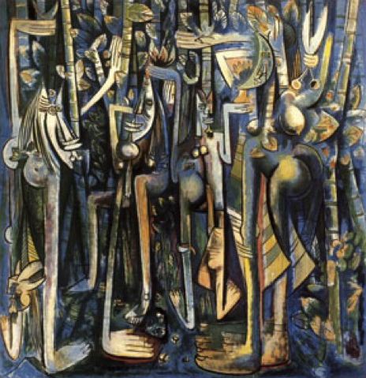
Wilfredo Lam, The Jungle, 1943. Gouache on Paper. Museum of Modern Art.
The painting The Jungle, that Lam produced after his return to Cuba, was both figural and abstract, both nationally specific to Cuba and anticipatory of a new, transnational consciousness of Négritude.32 There are striking parallels between this strategy and that taken by the Ethiopian artist Skunder Boghossian. Within Western histories of art, if he is considered at all (which is rarely), it is within the Surrealist tradition, as dreamlike. primitive, in sum, ahistorical. But that was not Boghossian’s intent. “I am aware that I am a witness to my time, other times, time itself,” Boghossian, and the time of the modern for him meant developing imagery that, as Giorgis, writes, “presents an absorbing and critical account of the political culture of the colonial and post-colonial eras, challenging the discourse of European modernist expressions to define modern Ethiopian art against canonical interpretations.” This involved “hybridization” and a “conceptually complex” dialogue between nationalism and transnationalism – a kind of post-modernism avant-la lettre, exhibiting these anti-essentialist qualities before the metropolitan west.33
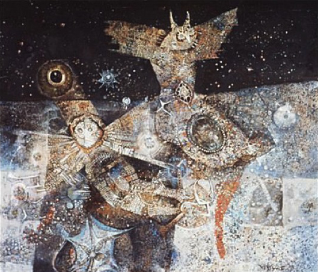
Skunder Boghossian, Night Flight of Dread and Delight (Juju’s Flight of Terror and Delight), “Nourishers Series,” 1963.
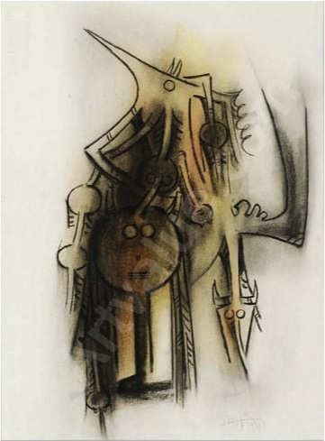
Wilfredo Lam, Totem, 1968.
Like Lam, Boghossian spent time in Paris, an experience that was less a pilgrimage to the European center for colonial artists than a meeting place with others in their situation.34 (Compare this with the exportation of New York modernism to the rest of the world as a conscious cultural policy of the U.S. Department of State.) Boghossian recalled seeing drawings by Wilfred Lam in a Paris gallery window as he was passing by, “that actually gave me a bodily shock.”35 It was, again, the all-important decade of the 1960s, when Frantz Fanon was also in Paris, and Boghossian’s circle included Aimé Césaire and Cheikh Anta Diop (and only later André Breton, who, like Sartre, was an appreciator of these figures after the fact) whose transnational political position condemned French colonialism and existing African regimes, both at once.36 This was the collective dream out of which Africa needed to a historical awakening, in Benjaminian fashion, as Giorgis observes. Boghossian’s 1969 painting, Juju’s Wedding, is a fusion of African animism and Christian divinity, idols and icons, showing the influence of traditional Ethiopian magic scrolls that Giorgis compares with the influence on Lam of the Afro- Cuban cult of Santería.37
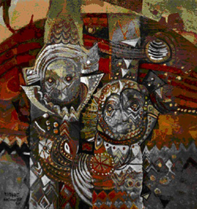
Skunder Boghossian, Juju’s Wedding, 1969.
Giorgis describes this simultaneity of history and modernity as a Benjaminian sense of time, in which “the meaning of the past is realized in the present.”38 This particular use of the past in order to be modern, whereby the aesthetic power of historical objects is released within a contemporary force-field that is crisscrossed by multiple currents of politics and culture, produces a non-sequential temporality and is exemplary of the new, global imagination.
Within this same historical constellation is Sadequain, who became the founding figure of Pakistani national art.39 Like Lam and like Boghossian, Sadequain became nationally famous only after a sojourn in Paris (1961-1967) and some degree of international success. Like Lam and like Boghossian, he appropriated elements of modernity for very different purposes than artists of the West. The Parisian exhibitions of modernist painters were his musée de l’homme, a toolbox of raw materials, and with this toolbox he returned home to become the leading artist of the newly created Muslim nation of Pakistan.
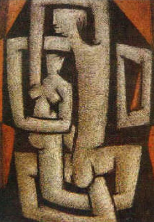
Sadequain, from Red Couple Cobweb Series, 1960s.
Called upon by the Pakistani government in the sixties to construct murals in public buildings, Sadequain painted historical panoramas that matched in their monumental sweep the Mexican murals of David Alfaro Siqueiros and Diego Rivera.40 His relation to the nation-building project was complicated by the intertwining of modernity with the national hegemony of Islam as the form of cultural identity.41 Surprisingly, it was not in his murals but in his most personal, most Parisian paintings that references to Islam were decisive.
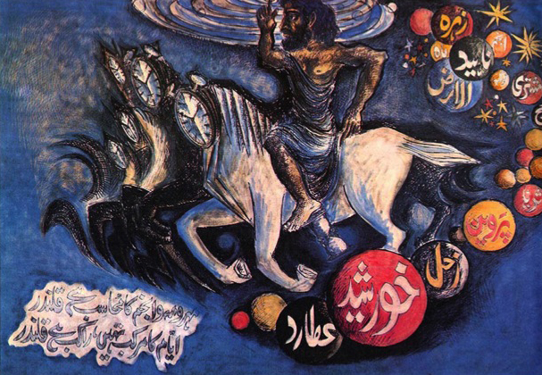
Sadequain, ca. 1977. Painting based on Muhammad Iqbal’s poetry. This painting is a rendering of a couplet from Iqbal’s poem “Qalandar’s Character,” from Zarb-i kalim (The Rod of Moses), Iqbal’s last collection of Urdu poetry. The calligraphy (verse) reads: “The qalandar rules over the sun, the moon, and the stars…”
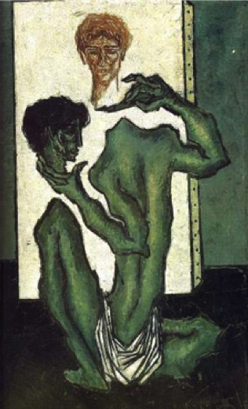
Sadequain, The Artist, 1966.
In the 1960s, Sadequain produced a series of drawings, self-portraits of the artist in his studio that clearly echo the work of Picasso, but with the not-so-minor difference that the artist is depicted with his head in his hand. This is an intentional self-reference to the seventeenth century Sufi mystic Sarmand, who wandered about naked and wrote transgressive verses that got him in trouble with the political authorities. Sarmand was beheaded in 1661 under the charge of heresy.
Here is Sadequain’s self-portrait, naked, with sheltering hands that in their branch-like expanse, spell out the name Allah:
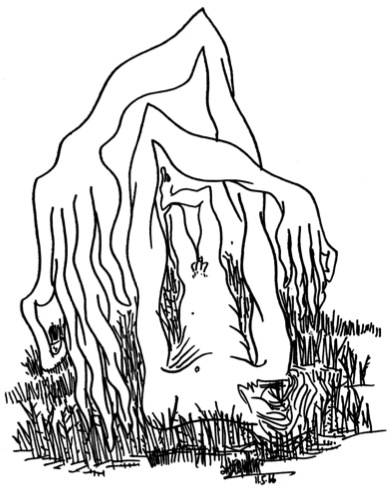
Sadequain, self-portrait, 1966. His contorted fingers spell the word “Allah,” a gesture Sadequain also performed in his photographic portraits.
Arabic calligraphy, that may appear to be non-representational abstraction in Western eyes, is filled with historical, cultural, and political content to those who can read it.42 The artist accomplished a revival of the art of Arabic calligraphy with a distinctly modernist sensibility. Its appearance in his Self-Portrait is vegetative rather than textual, setting up a circuit of meaning that moves between nature and history mediated by the artist’s own subjectivity.43
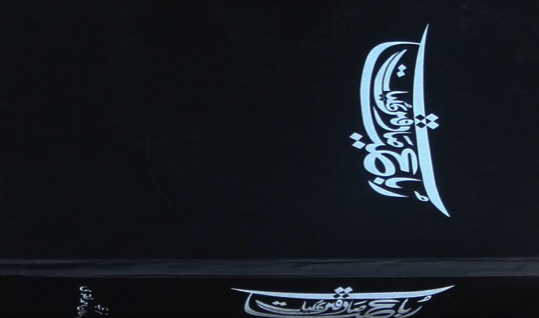
Sadequain, from Rubiyat-e-Sadequain Kuliyat, 1969-70.
Iftikhar Dadi has called such uses of hand writing in art “calligraphic modernism,” characterized by the affective, gestural communication of the brushstroke itself, the emotive quality of which can be appreciated despite linguistic obscurity.44 At the same time in other parts of the Islamic world, artists were using the traditions of calligraphy to negotiate the post-colonial tensions between national belonging and a new consciousness that was, in Dadi’s words, “larger than the iconography of any single nation state.”45
A decade before Sadequain, the Syrian born artist Madiha Umar explored the formal elements of Arabic calligraphy. “Modern” in Umar’s work is the way she breaks apart the letters into their visual components, a destruction of literateness that has been described as working to “free the Arabic letters from its bondage.”46
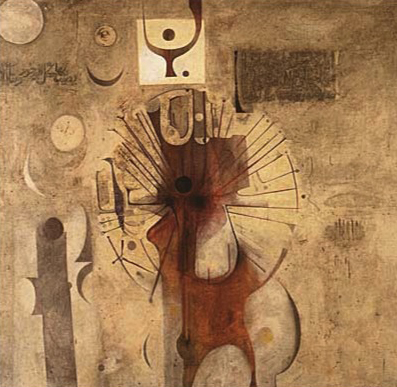
Ibrahim Mohammed El-Salahi, The Last Sound, 1964.
By the sixties, calligraphic modernism as a practice that de-emphasized literal meaning became widespread, allowing artists to communicate to each other across national and linguistic divides. The Sudanese artist El -Salahi created an interplay between calligraphy and figuration, combining African motifs with calligraphic elements, and celestial bodies with animate forms in the 1964 painting The Last Sound (figure 51). While the work’s title refers to a specific Islamic practice of reciting prayers for the dead and dying to accompany the soul’s passing from the corporeal to the celestial, it is “manifestly modern” in its dynamic integration of forms.47 El-Salahi’s experimental practices, rejected in the salon culture of post-colonial Sudan, engaged with “a more democratic and vernacular visual culture.”48
It was El-Salahi’s use of Arabic calligraphy that inspired the Ethiopian artist Boghossian (when the two were in Paris) to create his Feedel Series, which incorporated the forms of Amharic letters (the script of the Ethiopian Christian church), intentionally merging the oppositional moments of abstraction and realism, the sacred and the profane.49 In Iraq, and Iran as well, the Arab cosmopolitanism of “calligraphic modernism” was, writes Dadi, a progressive aspect of the return of artists to tradition: “the abstract/calligraphic mode pries open the boundaries of the nationalist frame,” cutting “across temporality and geography, thereby propelling this body of work into the present.”50
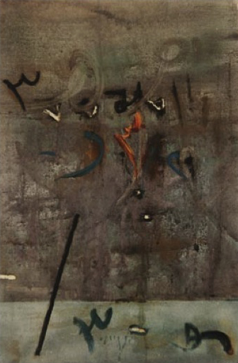
Shakir Hassan Al Said, Untitled, 1968.
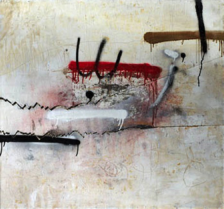
Shakir Hassan Al Said, Untitled Composition, 1980. Mixed media on wood, 31 1/2 x 35 1/2. Private collection.
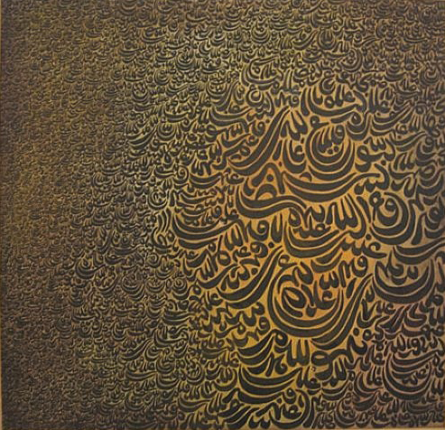
Charles-Hossein Zenderoudi (Iran), Untitled, ca. 1967.
The sense of being in a porous, border space between the national-specific and the international-modern was common to many non-western artists who shared an interest in calligraphic traditions. Taiwanese-born Liu Kuo-Song, whose work I showed you earlier, claims to have discovered abstraction precisely within the brushstroke of traditional Chinese landscape painting.51 China, it should be noted, was a politically fractured landscape, including the Maoist People’s Republic of China, the British colony of Hong Kong, and the nationalist Chinese government in Taiwan—areas whose residents speak such different dialects that only through writing is communication possible. Yet for Liu as well, the familiar calligraphic shapes, released from literal meaning, became visual forms that have affinities with the natural world. His description of the process echoes the motivations of Boghossian, Sadequain and El-Salahi, treating the past, as a modern painter, in order to break away from it.
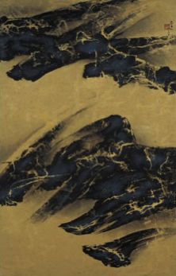
Liu Ku-Song, brush detail.
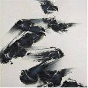
Liu Ku- Song, brush detail.
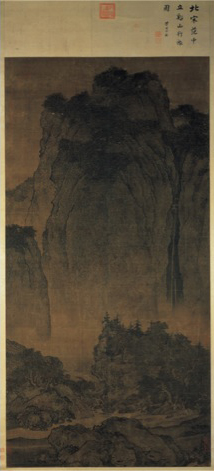
Fan Kuang, Travellers among Mountains and Streams, 10th Century (Song Dynasty) landscape painting; influence Liu Suosong.
His planetary series began by merging the gesture of the ink brush with the hard edge of modernism:
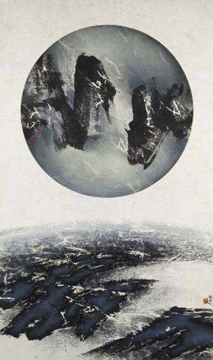
Liu Kuo-Song, Which is Earth? No. 9, 1969.
In 1965 Liu wrote, “We are neither ancient Chinese nor modern Westerners. If copying ancient Chinese paintings is forgery, so is producing modern Western paintings.” His goal was to achieve a new kind of painting altogether: “‘Chinese’ and ‘modern’ are the two blades of the sword which will slash the Westernized and traditionalist schools alike.”52 In all of these examples of calligraphic modernism, language—that element in social life which is experienced as most exclusionary— leaves textual rootedness and even semantic legibility, and allows artists to participate globally in the creation of something new.
Like Sadequain, Liu rescued the tradition of calligraphy by modern means. And whereas Arabic calligraphy linked multiple nations from Pakistan to North Africa, Chinese calligraphy linked multiple spaces that were at the time politically divided: Taiwan, Hong Kong, and the People’s Republic of China.
There is another, shared aspect of the new globalization that deserves comment, the fact that in every instance we have been considering, from Voyager II’s orbiting the moon to the transnational aesthetics of post-colonial modernity with which we have been concerned in these images. Temporal simultaneity and spatial coexistence on a global scale is “experienced” only virtually, as a mediated experience. The reproduced image has been fundamental in the emergence a global sensibility. The first pictures of the earth were transmitted from space as a televised broadcast. Blumenberg found the space images of the earth a more significant event than the actual moon landing. Liu Kuo-Song recalls being inspired by space photography. Kidlat Tahimik, listening on his radio was deprived of moon images when the voices of the astronauts reached him on earth, but precisely this lack is the visible content of his prize-winning film.
The frequently attested importance of the reproduced image for post-colonial artists is striking. Wilfredo Lam first became familiar with the work of Picasso and Matisse through magazines brought back from Paris by friends.53 Dadi writes that “Sadequain had formed his initial impressions of European modern art from magazine reproductions,” a de-contextualization that allowed for a “mistranslation” of the European modernist works, freeing them “to be perceived in the Pakistani context without their ideological baggage.”54
Again and again we have documentation of this fact.55 The technologies of reproduction – camera and film, illustrated magazine and televised broadcast – allow the image to meet the viewer halfway (to paraphrase Walter Benjamin56). And far from being a problem for artists, far from degrading artistic production through a loss of aura, these widely dispersed images decreased the authority of the metropole over the post-colonial artist, for whom modernist techniques, ripped out of their original contexts, became useful tools within transnational networks producing intercultural solidarities. The anti-auratic appropriation of the image via technological reproductions is foundational for a global aesthetics.
This may indeed be the lasting effect of Voyager II on art globally.
Not only images circulated. The political climate of the 1960s brought issues of social justice to world visibility in a global public sphere. No political issue was merely national. The US civil rights movement resonated with African Négritude; post-colonial movements were united in their need to negotiate between the two superpowers, attracted to Marxism, yet burned by the brutality of Soviet-backed takeovers (as in Ethiopia under the Derg); choosing freedom, yet facing a US foreign policy that all too often sacrificed democratic ideals for narrow self-interest. All of the artists we have been considering were well aware of these political realities; none of them compromised their creative independence to back a particular political regime; none of them followed the whims of the art market; all of them forfeited existential security and a simple national or cultural “identity” as a consequence.
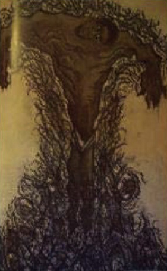
Sadequain, “Martin Luther King” (Christ Series, 1960s).
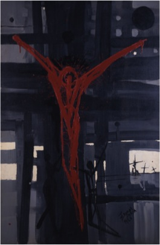
Gebre Kristos Desta, Golgotha (1963).
Conclusion:
Let’s return to the question, is art history global? The answer calls for remapping time as well as space, and questioning the most basic categories of our historical narratives—ones that privilege the sorting out of aesthetic production by national, civilizational or cultural identities. It demands that we question models of explanation based on causal influence and that define creativity in terms of an authentic original, disseminated mimetically in the form of degraded copies. From a global perspective, what is primitive about the modern is precisely the opposite of the mythic or the archaic. “Primitive” here is fully historical: it means originary, the first stage, describing Urforms of the global present and possibilities of a time to come.57 What is called for is nothing short of a transformation of scholarship, its empirics, its theories, but also, and perhaps most significantly, the social relations of art as property (of the artist-creator, or the culture/nation/ethnicity to which s/he “belongs”) that underlie both theoretical conceptualizations and the empirical research that sustains them.
Elkins’ comment regarding Western universities not hiring Chinese-trained historians of art is valid within the given frameworks of knowledge. But if the established disciplines cling to their foundational narratives that lead into the cul-de-sac of postmodernism, then Western universities will find themselves irrelevant and no self-respecting intellectual will want to teach at them. But the alternative is not to get on the bandwagon of art’s present globalisation – commercial markets, museums and biennials as currently arranged. No rupture with the past would justify totally jettisoning the history of art as just too much excess baggage, in favour of a continuous contemporaneity that flatters the already amnesia-prone profession, and lulls artists, critics and art promoters into believing that their blissful ignorance is liberation. We need history, now more than ever, but it will involve a transnational expropriation of the cultural heritage, a rescue of history in the communist mode.
Today we hold the world in our hands, but only virtually. Modernity’s hoped-for ‘family of man’ remains a body in pieces. The creative forces of the present explode the structures of history, scattering fragments of the past forward into unanticipated locations. These fragments have multiple affinities that cannot be known beforehand, which is a good thing. Their juxtaposition in the present produces unforeseen constellations, providing new readings of the past as a way of charting a different future. Entering multiple constellations, they shine the brighter for it.58
In the early twenties, with the rise of European modernity, Georg Lukács lamented the fact that modern society had lost every image of the whole. Influenced by Hegel, he believed that the totality of the past could only be grasped as a sequence of stages that led all of humanity from feudalism to capitalism and beyond. This trajectory of history has indeed come to an end. But the history of humanity, far from over, may be just at the beginning.
In comparison, the Farnese Atlas, the second-century (all dates in this essay are Christian Era) Roman statue of Atlas holding the celestial globe—famously replicated at Rockefeller Center in New York City—is scientifically naive. Considered to be a copy of a Hellenistic original, it shows the Western constellations from a god-like perspective of the outside looking in and without the positioning of individual stars. Ptolemy’s second-century text, Almagest (Arabic for ‘Great Constellation’) included a catalogue of 1,022 stars but unlike the Dunhuang atlas, without their position in the sky. Lost to Europe until the twelfth century, the Almagest catalogue of stars was used by Dürer to depict the Western constellations in 1515. ↩
The Dunhuang Star Atlas was found nearby the town in Mogao, a Buddhist holy site known as the Caves of the Thousand Buddhas cut into the rock of a cliff. Discovered in 1907 by Aurel Stein, this scroll chart is now in the British Museum. A detailed description of the manuscript was published in 2009 by astrophysicist Jean Marc Bonnet-Bidaud and the astronomer Françios Praderie, working together with Susan Whitfield, Director of the International Dunhuang Project at the British Museum. See ‘The Dunhuang Chinese Sky: A comprehensive Study of the Oldest Known Star Atlas’, http://idp.bl.uk/education/astronomy_researchers/index.a4d (downloaded 24 December 2010). ↩
‘Astronomy in China was an essential imperial science as the divination based on the sky events taking place in the celestial mirror image of the empire was the way to rule the state’. Bonnet-Bidaud et al. ↩
An azimuth (from the Arabic as-simt, ‘direction’) is an angular measurement in a spherical coordinate system. ↩
‘It is possible that we have in hands [sic] not a scientific text intended for scientists only but a product of more general use which existed in several copies for several users … [T]he purpose of such a scroll could have been to help travelers or warriors on the Silk Road who needed both predictions of the future from the aspect of the clouds [images of cloud types were included in the scroll] and assistance in their travel from the aspect of the night sky’. Bonnet-Bidaud, et al. ↩
Susan Whitfield, The Silk Road: Trade, Travel, War and Faith. Exhibition catalogue, The British Museum, London, 2004, p. 35. ↩
This description is from Isidore, Bishop of Seville, whose writings are among the sources used by Beatus, the eighth-century monk of Liébana who wrote the original commentary. Isidore adds, ‘It is said the legendary Antipodes live there, a fabulous people whose feet are positioned in the mirror image of our own, and who, included on some of the Beatus maps, are depicted as Sciopods, “shadow-footed men” whose leg is lifted overhead as a parasol’. See John Williams, ‘Isidore, Orosius and the Beatus Map’, Imago Mundi, 49, 1997, pp. 7-32. The definitive (if still debated) study of the 26 extant variants of the Liébana Beatus is the 5 volume work by John Williams, The Illustrated Beatus, a corpus of illustrations of the Commentary on the Apocalypse, Harvey Miller, London and Turnhout 1994-2003. ↩
Paula Fredriksen, ‘Apocalypse and Redemption in Early Christianity: From John of Patmos to Augustine of Hippo’, Vigiliae Christianae, 45, 1991, pp. 151-183 (p. 151). ↩
The Liébana Beatus series was also a commentary on current events, given the arrival of Muslim rulers in the early eighth century, and given the fact that the Prophet Mohammed appeared to re-open the tradition of prophecy that the book of Revelation had announced as closed. Just what meaning contemporaries were to take from the juxtaposition of the advent of Muslim rule and the book of Revelation is left open in the commentary, which is an amalgam of previous interpretations. ↩
Sayyid Maqbul Ahmad, ‘Cartography of al-Sharif al-Idrisi, in J. B. Harley and David Woodward, The History of Cartography, vol. 2, Book 1: Cartography in the Traditional Islamic and South Asian Societies, The University of Chicago Press, Chicago, 1982, p. 160. ↩
It is currently kept in protective storage at the First Historical Archive of China in Beijing. A full-sized digital replica was made for the South African government in 2002. The degree of ‘Chinese’ knowledge of world geography is debated. Much of the controversy would disappear, perhaps, if knowledge were not presumed to be the possession of a particular civilisation. Maps were translatable tools, not ethnic expressions. While the necessary knowledge took effort to acquire, it was held in common. ↩
J. B. Harley and David Woodward (Eds.), The History of Cartography, vol. 1: Cartography in Prehistoric, Ancient, and Medieval Europe and the Mediterranean University of Chicago Press, Chicago, 1987, pp. 3-4. ↩
‘Essential to an understanding of the Arabs’ contribution to mapmaking is their approach to geodesy—the measurement of distances on the curved surface of the earth. Such distances can be measured either in linear units, such as the Arabic mile, or in angular units—longitude and latitude. To convert from one to the other one must know the number of miles per degree or, equivalently, the radius of the earth. In the Greek classical period, before the general use of latitude as an angular coordinate, the inhabited areas (the oikoumene) was [sic] divided into zones, or climates, according to the length of the longest day in the central part of the zone. Thus Ptolemy, in his Almagest, takes seven boundaries in steps of one-half hour, running from thirteen to sixteen hours. The practice continues in Islamic mathematical geography … Simultaneous observations of a lunar eclipse in two places provide in principle a means of determining the difference of longitude between places.’ Sayyid Maqbul Ahmad, ‘Cartography of al-Sharif al-Idrisi,” J. B. Harley and David Woodward (Eds.), The History of Cartography, op. cit., vol. 2, Book 1, pp. 175-176. For Europe’s renewed reception of Ptolemy, see Kathleen Biddick, ‘The ABC of Ptolemy: Mapping the World with the Alphabet’, in Sylvia Tomasch and Sealy Gilles (Eds.), Text and Territory: Geographical Imagination in the European Middle Ages, University of Pennsylvania Press, Philadelphia, 1998, pp. 268-293. ↩
Al-Idrisi wrote that his maps were both aesthetic and scientific, ‘a true description and pleasing form’. Ahmad, in J. B. Harley and David Woodward (Eds.), History of Cartography, op. cit., vol. 2, 1, p. 163. ↩
In China, accuracy of astrological prediction was necessary for the religious legitimacy of imperial rule, and divination by star charts was based on the belief that events in heaven could be read as a reflection of those on earth. In the Islamic world, ‘the concept of sacred direction (qibla in Arabic and all other languages of the Islamic world) in ritual, law, and religion, applying wherever the believer was, … gave rise to the charts, maps, instruments and related cartographic methods’, but this religious belief produced a ‘dual nature of science’, on the one hand ‘folk science’, advocated by legal scholars that was ‘innocent of any calculation’, and on the other ‘mathematical science’, derived mainly from translations of Greek sources, ‘involving both theory and computation’. Ahmad, in J. B. Harley and David Woodward (Eds.), History of Cartography, op. cit., vol. 2,1, p. 189. ↩
Ptolemaic science was fundamental to both Eastern and (after the twelfth century) Western traditions; O-maps centred on Jerusalem existed in Christian and Islamic forms. ↩
‘By television, people saw the earth from a distance of 313,800 kilometers. They saw the moon’s surface from a distance of 96.5 kilometers and watched the earth rise over the lunar horizon … Then followed on Christmas Eve one of mankind’s most memorable moments. “In the beginning God created the Heaven and the Earth.” The voice was that of Anders, the words were from Genesis. “And the Earth was without form and void and darkness was upon the face of the deep. And the spirit of God moved upon the face of the waters and God said, ‘Let there be light,’ and God saw the light and that it was good, and God divided the light from the darkness.” Lovell continued, “And God called the light day, and the darkness he called night. And the evening and the morning were the first day. And God said, ‘Let there be a firmament in the midst of the waters. And let it divide the waters from the waters.’ And God made firmament, and divided the waters which were above the firmament. And it was so. And God called the firmament Heaven. And evening and morning were the second day.” Borman read on, “And God said, ‘Let the waters under the Heavens be gathered together in one place. And the dry land appear.’ And it was so. And God called the dry land Earth. And the gathering together of the waters he called seas. And God saw that it was good.” Borman paused, and spoke more personally, “and from the crew of Apollo 8, we close with good night, good luck, a Merry Christmas and God bless all of you—all of you on the good Earth”.’ Accessed June 24, 2011: http://www.hq.nasa.gov/office/pao/History/SP-4204/ch20-9.html The flight recording is available on audio: http://nssdc.gsfc.nasa.gov/planetary/image/apollo8_xmas.mov ↩
The Soviets began the Cold War competition by sending the first human, Yuri Gagarin, into space in 1961. ↩
Hans Blumenberg, The Genesis of the Copernican World View. Translated from the German by Robert N. Wallace, The MIT Press, Cambridge, Massachusetts, 1987, p. 678. ↩
Ibid., p. 676. ↩
Ibid., p. 679. ↩
That such a right is an act of sovereign power is the claim of Kathleen Davis in her recent book, Periodization and Sovereignty: How Ideas of Feudalism and Secularization Govern the Politics of Time, University of Pennsylvania Press, Philadelphia, 2008. But if, as Fredric Jameson suggests, we cannot not periodise, then let us extend the ‘we’ to a communal (dare I say Communist?) inclusiveness with this inaugural event. See Fredric Jameson, A Singular Modernity: Essay on the Ontology of the Present, Verso, London and New York, 2002, p. 94. ↩
http://www.focus-philippines.de/kidlat.htm Accessed October, 2010. ↩
Fredric Jameson, The Geopolitical Aesthetic: Cinema and Space in the World System, Indiana University Press, Bloomington, 1992. ↩
This constellation is described in my essay, “La Seconde fois comme farce… Pragmatisme historique et présent inactuel’, Alain Badiou and Slavoj Zizek (Eds.), L’Idée du communisme, Lignes, Paris, 2010, pp. 93-113. English translation: The Idea of Communism, Verso, London, 2010. ↩
Fanon, like Qutb (but unlike Shariati) justified violence as a political act. He died of leukaemia in 1961. ↩
See the new biography, Ali Rahnema, An Islamic Utopian: A Political Biography of Ali Shariati, I. B. Tauris, London, 2009, reviewed by Nathan Coombs for Culture Wars, ‘Ali Shari’ati: Between Marx and the Infinite’, available at www.culturewars.org.uk (posted May 2008). ↩
James Elkins (Ed.), Is Art History Global?, Routledge, London and New York, 2006, p. 9. This is the third volume in The Art Seminar, an ongoing, international programme held at the Stone Art Theory Institute under the auspices of the Chicago Institute of Art. This volume took as its starting point David Summer’s book Real Spaces: World Art History and the Rise of Western Modernism, Phaidon Press, New York, 2003. The rapid obsolescence of Summers’ approach to questions of global art history (based on lectures given in the preceding decade) indicates how quickly the picture has changed. Several of the contributors to Elkins’ volume make the point we make here, that the answer to these questions will not come from the West and its traditions. ↩
Elkins himself has modified his position. The next volume in the series, Art and Globalization, co-edited by Elkins, Zhivka Valiavicharska and Alice Kim (The Pennsylvania State University Press, University Park, 2010) shows not only how assumptions change, but more, how the global art world has produced a counter-culture of resistance to its own hegemonic practices. ↩
Giorgis claims that whereas Ethiopian intellectuals insisted on the uniqueness of Ethiopia as a country never colonised, they were under the sway of colonial intellectual hegemony, accepting Western definitions of modernisation and modernity as universal. Elizabeth Giorgis, Ethiopian Modernism: A Subaltern Perspective, PhD Dissertation, Cornell University, 2010, pp. 8-9. ↩
This was a widespread dilemma, experienced between the world wars in New York’s Harlem Renaissance by Romare Bearden, Norman Lewis, Alain Locke and others. ‘[T]he challenge … was to establish their identity in an era when they were expected to draw on their African heritage but when that heritage had already been appropriated, decontextualized, and “essentialized” in the service of modernism’. Lowery Stokes Sims, Wifredo Lam and the International Avant-Garde, 1923-1982, University of Texas Press, Austin, 2002, p. 218. On Locke’s non-essentialising, universally humanising conception of the New Negro artist, see Michelle René Smith, Alain Locke: Culture and the Plurality of Black Life, PhD Dissertation, Cornell University, 2009. ↩
The importance of Negritude in the post-colonial context cannot be overestimated, its African identity leading dialectically to the emergence of a global subjectivity, tying Afro-American artists to Caribbean theorists (Frantz Fanon), to the Algerian anti-colonial movement, and beyond. ↩
Cited in Elizabeth Giorgis, Ethiopian Modernism, op. cit., p. 75. ↩
Lam returned to Paris in the fifties, settled in Albisola, Italy, while still spending time in Havana, New York and Paris. ↩
Cited in Elizabeth Giorgis, Ethiopian Modernism, op. cit. p. 78. ↩
As Giorgis notes, echoing Walter Benjamin, this doubly problematic contemporary reality, not some primitive past, was the collective dream out of which Africa needed to a historical awakening. Elizabeth Giorgis, Ethiopian Modernism, op. cit., p. 83. Boghossian returned to Ethiopia to teach at the Fine Art School for three years in the late sixties, leaving a lasting impression on young Ethiopian artists before moving to the United States, where he was active in the civil rights movement. He joined Howard University in 1972 as a colleague of Jeff Donaldson, initiator in 1968 of the Afri-Cobra movement of black visual art and black power. Like Lam, multinational experiences were reflected in his art, defying any simple cultural categorisation. Lam compared himself to a Trojan horse, smuggling elements of Santería and Lucumí into European modernism. See Lowery Stokes Sims, Wifredo Lam and the International Avant-Garde, 1923-1982, op. cit., p. 223. Boghossian ‘acknowledged the ruptures and discontinuities which constituted precisely his uniqueness. See Elizabeth Giorgis, Ethiopian Modernism, op. cit., p. 113. ↩
Elizabeth Giorgis, Ethiopian Modernism, op. cit., p. 108. ‘Influence’ here should be understood as a contemporary aesthetic and critical interest, rather than a desire literally to return to the past. Wifredo Lam delighted in the fact that that the Afro-Cuban symbology in his work could ‘disturb the dreams of the exploiters’ while insisting, ‘I have never created my images according to a symbolic tradition, but always on the basis of poetic excitation’. Cited in Lowery Stokes Sims, Wifredo Lam and the International Avant-Garde, 1923-1982, op. cit., p. 217. ↩
Elizabeth Giorgis, Ethiopian Modernism, op. cit., pp. 83-86. Giorgis makes us realise that if Boghossian’s images were dreamlike, if they could be described as ‘spiritual’, then it is in Benjamin’s sense, as an historical image, and not one that is universal and unchanging (Carl Gustav Jung), or individual and ontological (Jacques Lacan). She points out that the rescue of tradition in Boghossian’s paintings is in opposition to its treatment by Western art historians, who classify early Ethiopian Christian art within the Byzantine world (whereas Africanists ignore this early Christian-identified art). Hitherto, the histories of Ethiopian art have been written by Europeans most of whom did not know Amharic and therefore could not carry out original historical research. The standard text, Major Themes in Ethiopian Painting by Stanislas Chojnacki, classifies the paintings into two periods: ‘mediaeval’ and Gonderane. Giorgis criticises ‘the complete omission by European scholars of transcultural influences from the neighboring countries of Ethiopia, Sudan, Egypt, Kenya, and Uganda, which Boghossian easily fused into many of his works, and which one can easily identify in Ethiopian Christian traditional paintings and architectural forms’. Elizabeth Giorgis, Ethiopian Modernism, op. cit., p. 106. ↩
Much of my material on Sadequain Naqqash (1930-1987) stems from the recent book by Iftikhar Dadi, Modernism and the Art of Muslim South Asia (Islamic Civilization and Muslim Networks, The University of North Carolina Press, Chapel Hill, 2010. ↩
Siqueiros and Rivera belong to an earlier generation of artists who went to Paris and returned home to become nationally identified artists. Sadequain’s inspiration was Persian thinker Muhammad Iqbal (some of whose poems he illustrated). Iqbal, born in British India, studied in Britain and Germany (where he read Nietzsche with appreciation), and after the founding of Pakistan became the country’s most nationally revered poet. Sadequain’s murals depicted the histories of multiple civilisations. They included Treasures of Time (State Bank of Pakistan), depicting the ascent of human intellectual life from Plato and Euclid to al- Ghazzali and Rumi, from to Shakespeare to Goethe and Marx, and from Confucius to Iqbal and Einstein; Saga of Labor at the Mangla Dam project (built in the sixties as the twelfth largest dam in the world; and a series of ceiling murals at the Lahore Museum, described thematically as man struggling to overcome the infinitude of space. In the eighties he painted several murals in India, including 99 calligraphic panels of Asma-e-Husna (the beautiful names of God) at the Indian Institute of Islamic Studies at Delhi (1971-1972). He completed a mural for the power station in Abu Dhabi in 1980. ↩
This was a difference between Sadequain and the Mexican muralists, whose point of departure for transnational subject matter was Marxist in inspiration. Both had an audience with Stalin, arranged by Mayakovskii, in 1928; travelling home together, they quarrelled divisively over Trotsky, whom Rivera supported. Sadequain, too, meant his work for ‘the people’, including Islamic elements precisely for that reason. Dadi notes that the artist exhibited his paintings of Qur’anic verses on kerbs and public spaces in an industrial area in Karachi ‘with the intent that they would be viewed by poor laborers’. Iftikhar Dadi, Modernism and the Art of Muslim South Asia, p. 175. ↩
Dadi writes that while Sadequain never adopted an official ideology (nationalist, Islamist, or Communist), the political strength of his work lay in the fact that his ‘singular persona continued to serve as a reminder of the personal, sexual, and Sufistic surplus that could not be contained in [General] Zia’s coercive and austere Islamization project’. Iftikhar Dadi, Modernism and the Art of Muslim South Asia, op. cit., p. 175. ↩
He claimed to have ‘found the essence’ of calligraphy in the late fifties in the silhouette form of cactus plants growing in Pakistan’s seaside landscape: ‘Everything that I have painted since then—a city like Rawalpindi, buildings, a forest, a boat, a table or a chair, a man, a mother and child, or a woman—has been based on calligraphy, which in itself issues from the structure of the cactus’. Cited in Iftikhar Dadi, Modernism and the Art of Muslim South Asia, op. cit., p. 150. The mural paintings have cactus-like forms in the landscape and in the drapes of clothing. Illustrations of Persian poems, including his own, integrate textual calligraphy directly. ↩
Iftikhar Dadi, ‘Ibrahim El Salahi and Calligraphic Modernism in a Comparative Perspective’, South Atlantic Quarterly, 109, 3, 2010, pp. 555-576. As a modernist method, it allows us to compare the work of various artists from multiple nations and cultural sites, from Sadequain in Pakistan to Franz Klein in New York City. See also Iftikhar Dadi, ‘Sadequain and Calligraphic Modernism’, Chapter 3 of Modernism and the Art of Muslim South Asia, op. cit., pp. 134-176. ↩
Iftikhar Dadi, Modernism and the Art of Muslim South Asia, op. cit., p. 161. Artists working ‘not collaboratively or possibly without even knowing much about each other’s work’ were creating through calligraphy ‘an aesthetic of Muslim cross-national modernism’ that ‘bears some correspondences’ with the transnational Black aesthetic of Negritude. ↩
The first woman to receive a scholarship for international study from the Iraqi government in the thirties, she lived in Europe and the United States before returning to Iraq, and was in dialogue with Western art historians (Richard Ettinghausen, for instance) on the significance of calligraphy for Islamic aesthetics more generally. See Fayeq Oweis, Encyclopedia of Arab American Artists, Greenwood, Westport, Connecticut, 2007, p. 256. Dadi also acknowledges Umar as a forerunner, but would question calligraphy’s role as the determining figure in a uniquely Islamic history of art, rather than seeing the emergence of Islamic calligraphic as a distinctly modernist practice, allowing global comparisons to other artists of the time. Compare with Giorgis’ critique of Ethiopian historians of art, above, footnote 37. ↩
Iftikhar Dadi, ‘Ibrahim El Salahi and Calligraphic Modernism’, op. cit., pp. 555-556. El Salahi was educated at London’s Slade School of Fine Art in the fifties; in the sixties he travelled in West Africa, Europe, Mexico, and (with extended fellowships) in the United States. ↩
Ibid., p. 563. Dadi writes, ‘As [Ell-Salahi] describes it, this transformation demanded breaking open the Arabic letter and exploring the new aesthetic universe that emerged from the fragments and the interstices’. ↩
Boghossian ‘started working on calligraphy in Paris, heavily influenced by Ibrahim El-Salahi of Sudan, who at the time was working on Arabic calligraphy. Boghossian joked that an Ethiopian always wanted abstraction with a bit of realism, and is the reason why he started creating the Feedel Series’. Elizabeth Giorgis, Ethiopian Modernism, op. cit., pp. 89-90. ↩
Iftikhar Dadi, ‘Ibrahim El Salahi and Calligraphic Modernism’, op. cit., abstract and p. 567. ↩
David Clarke, ‘Abstraction and Modern Chinese Art’, Kobena Mercer et al. (Eds.), Discrepant Abstraction, The MIT Press, Cambridge, Massachusetts, 2006, p. 80. ↩
Ibid. ↩
Lowery Stokes Sims, ‘The Post-modern modernism of Wifredo Lam’, Kobena Mercer (Ed.), Cosmopolitan Modernisms, The MIT Press, Cambridge, Massachusetts, 2005, p. 89. ↩
Iftikhar Dadi, Modernism and the Art of Muslim South Asia, op. cit., pp. 150 and 153. ↩
Mitter, writing on Indian modernism, notes, ‘From the 1920s onwards, as modernist “technologies” like cubism came into India, and were adopted, we need to examine how art reproductions in books and magazines contributed to the reinterpretation of cubism that was specific to the Indian context … [T]he main sources used by colonial artists were reproductions …’. Partha Mittler, ‘Reflections on Modern Art and National Identity in Colonial India: An Interview’, in Kobena Mercer (Ed.), Cosmopolitan Modernisms, op. cit., p. 26. Pakistan-born London artist Rashid Areen recalls being introduced to modern art in Karachi ‘through the information we used to get in the magazine and books imported from the West …’, Ibid., p. 162. Perhaps, echoing Blumenberg (see above), it would not have been necessary to send artists to Paris after all if what was to be brought back was, above all, images! ↩
‘Technical reproduction can put the copy of the original into situations which would be out of reach for he original. Above all, it enables the original to meet the beholder halfway’. Walter Benjamin, ‘The Work of Art in the Age of Mechanical Reproduction’, in Illuminations, Hannah Arendt (Ed.), translated from the German by Harry Zohn, Schocken Books, New York, 1969, p. 220. ↩
Urform (primordial) means primitive in this sense. The term has a scientific correlate: the ‘primitive’ streak is the beginning of life: ‘a faint white trace at the uppermost end of the germinal area, formed by an aggregation of cells, and constituting the first indication of the development of the blastoderm’. See the American Illustrated Medical Dictionary, p. 702. ↩
f the reader detects in this conclusion a theological inflection after all, I admit to having in mind Walter Benjamin’s description of utopia, in the context of his philosophy of history: ‘[N]othing that has ever happened should be regarded as lost for history. To be sure, only a redeemed mankind receives the fullness of its past —which is to say, only for a redeemed mankind has its past become citable in all its moments’. Walter Benjamin, ‘Theses on the Philosophy of History’, Illuminations, p. 254. ↩